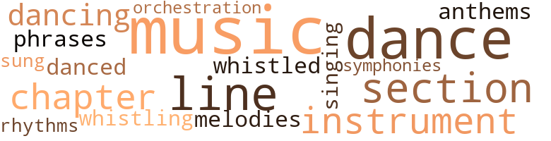
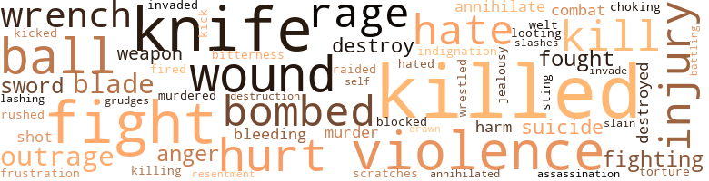
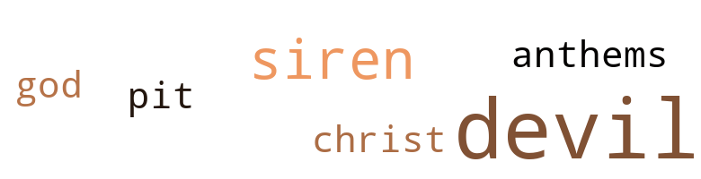

City of a Thousand Suns, by Delany, Samuel R. (1965)
47 music-related terms matched in this text.
Most frequent terms in this topic: music (10); dance (6); line (4); section (4); chapter (3)
chapter.n.01
Definition: a subdivision of a written work; usually numbered and titled
| word | sentence |
|---|---|
| chapter | That evening I wrote the first chapter of Captives of the Flames ( then called Out of the Dead City ) and planned the last chapter of City of a Thousand Suns . |
| chapter | That evening I wrote the first chapter of Captives of the Flames ( then called Out of the Dead City ) and planned the last chapter of City of a Thousand Suns . |
| chapter | Over the next two years I orchestrated , harmonized , conducted , rapped knuckles , coaxed , yelled , threatened suicide , praised extravagantly , criticized coolly , gave amateur psychotherapy : and finally the ideas , incidents , and characters of that first chapter had staggered all the way through to the last . |
dance.n.01
Definition: an artistic form of nonverbal communication
| word | sentence |
|---|---|
| dances | He recalled swinging the mali tongue - familiar , as the turn and fall of the sophisticated dances of royalty , the carriage and etiquette of a formal ball . |
| dance | " Petra , just what is the purpose of this dance ? " |
| dances | " When he dances , hardly anyone will notice - because he is King . " |
| dance | He watched the figures of the dance bloom like a flower . |
| dance | " Dance with me now , then , " he said , as the music for the partner-changing dance began . |
| dance | He nodded graciously and began the figure of the dance again , glancing once at Alter : her new partner was a middle-aged man with short brown hair and heavy lips and whose chest bore the royal insignia of the house of B'rond . |
dance.v.02
Definition: move in a pattern; usually to musical accompaniment; do or perform a dance
| word | sentence |
|---|---|
| dancing | The patterns growing in their minds were not the same , out as they tried to explain what they thought to each other , or bent to read or reread the lines , the images the poem made upon their thoughts were like names dancing orderly about one another , contrasting or similar , to anyone observing the workings of their minds : a single experience , an awareness of unity , unaware of their aloneness . |
dance.v.03
Definition: skip, leap, or move up and down or sideways
| word | sentence |
|---|---|
| danced | The now-brittle , now-flexible , bending and quivering lights danced orderly together . |
| dance | We 'll dance once more before the evening 's over , Alter . " |
| dance | " How is it to dance with a King ? " asked Jon . |
| dancing | " Who were you dancing with ? " |
hymn.n.01
Definition: a song of praise (to God or to a saint or to a nation)
| word | sentence |
|---|---|
| anthems | The spreading windows rose about the hall , stars glittering on the upper panes from the clear night The musicians " wove the old melodies from the polished shells , and with the help of a theramin opened the ball with the familiar anthems of Toromon . |
music.n.01
Definition: an artistic form of auditory communication incorporating instrumental or vocal tones in a structured and continuous manner
| word | sentence |
|---|---|
| music | But then the cry turned into a long , steady scream , and suddenly Jeof did something , and Vol was screaming too , and fighting , and their two voices had lost all music and become dissonant and agonized . |
| Music | Music began , and the turning figures of the acrobat and the regal youth opened a path through the other guests who , at the musical signal , themselves broke into bright whirling couples over the blue tile floor . |
| music | Then the music ended , and petals drifted back to the edge of the floor . |
| music | " Dance with me now , then , " he said , as the music for the partner-changing dance began . |
| music | The music rose , she turned away from him , and a tall woman in blue replaced her in his arms . |
| music | Jon exchanged a few civilities with his partner , the music rose again , and a moment later Alter whirled back to him . |
| music | " I guess so , " Alter said , moving away to the music , coming back , then whirling off . |
| music | A moment later thunderous rumbling replaced the music , growing , then fading , as darkness filled the high , coffin-shaped windows once more . |
| music | If Rolth and Clea do n't understand them , it 's because they have heard very little music played in this range . . . " Again he stopped , and the smile returned . |
| music | " I ... I do n't . . . " . . . picture my hand palm-stripped , the red harp of sinew caught on no music vulnerable , vaulted in no engine . . . " Where are you running to , Vol Nonik ? |
| music | weighed against experience and perception , the music their minds made free in the double sound of their names , Arkor , Larta , that they sung to one another , all , some , or none , random , and left not to chance , but to you and free to build and destroy they too approached the City of a Thousand Suns , to be struck by blue smoke , dispersed by sudden lightning , dropped from a web of silver fire . . . the red of polished carbuncle . . . the green of beetles ' wings . |
musical_instrument.n.01
Definition: any of various devices or contrivances that can be used to produce musical tones or sounds
| word | sentence |
|---|---|
| instrument | " Her body 's a trained , sensitive instrument . " |
| instrument | He placed the instrument along the diagonal of the square and sighted the angle . |
| instrument | He spoke i that solo , yet like a single instrument after a chord , it implied - symphonies to come between them . |
orchestration.n.01
Definition: an arrangement of a piece of music for performance by an orchestra or band
| word | sentence |
|---|---|
| orchestration | r But these scenes fell before the laws of orchestration . |
phrase.n.02
Definition: a short musical passage
| word | sentence |
|---|---|
| phrases | And something inside her went smash and she was crying , " Dr. Wental , for the love of . . . help me . . . she 's dead , my daughter , Renna , she 's been ... oh , she 's dead . . . " The half phrases leapt from her mouth and burned her lips , her cheeks , seared her eyes blind until only tears could wash them open . |
rhythm.n.04
Definition: the arrangement of spoken words alternating stressed and unstressed elements
| word | sentence |
|---|---|
| rhythms | Practiced in rhythms , it turned wailing against itself as they climbed down the stairs to the yard . |
section.n.01
Definition: a self-contained part of a larger composition (written or musical)
| word | sentence |
|---|---|
| section | They turned down one of the thirteen stone alleys that marked the oldest section of the city . |
| section | It was tilted sideways , and even in the moonlight one section of the red and gold bulkhead showed black blisters over half its length . |
| section | But for his own reasons , this one hysterical imperative was what he contemplated as he snuck from the blacked off section , slipped past the guards , and made his way to the water front . |
| section | Thanks to the radiation around them , evolution has run wild in Toromon , and there is one atavistic section of the population that has regressed to a point that race had passed three million years ago , while another segment has jumped a million years ahead and become a race of giant telepaths . |
singing.n.01
Definition: the act of singing vocal music
| word | sentence |
|---|---|
| singing | It was green , and comfortable , and when they woke , it was evening , and the leaves shaking outside their window with the weight of a singing bird were sunset bronze against purple . |
symphony.n.01
Definition: a long and complex sonata for symphony orchestra
| word | sentence |
|---|---|
| symphonies | He spoke i that solo , yet like a single instrument after a chord , it implied - symphonies to come between them . |
tune.n.01
Definition: a succession of notes forming a distinctive sequence
| word | sentence |
|---|---|
| line | His perception dim , his breathing slow , he sat in the dark as he had for the last hour and a half , not so much thinking as allowing pictures to form on his mind : a girl 's face , eyes closed , a line of blood from the comer of her mouth , thin as a red pencil mark ; a body squashed on the wharf by the sea as sirens filed at the darkness ; a store window shattering brightly around his jutting fist in moonlight That time his arm had been cut . |
| lines | Order these desperate strokes to single lines , separate and tangible , beautiful and real ; fishbones throw their thin combed shadows finely on a wall , portending the ideal . |
| line | Somewhere a man and woman sat - Ton and Alter , but he identified them only after he picked them out - together in a room , shoulder to shoulder , heads bent together , reading a poem from a crumpled paper , now stopping to ask each other what this line meant , now going back to look at another page . |
| melodies | The spreading windows rose about the hall , stars glittering on the upper panes from the clear night The musicians " wove the old melodies from the polished shells , and with the help of a theramin opened the ball with the familiar anthems of Toromon . |
| line | That when you write a poem , Vol , you write it to an ideal reader , one who will hear all the rhythmical subtleties , will respond to all the images , will reverberate to all the references , will even be able to catch you when you do something wrong ; this reader is the one you sweat for when you spend hours to make sure each line is perfect . |
| line | " It was almost like a line of poetry , that someone scrawled over the fountain in front of Gymnasium Plaza . " |
whistle.v.01
Definition: make whistling sounds
| word | sentence |
|---|---|
| whistled | Alter whistled . |
| whistling | Two of the kids , boy and girl , were whistling in harmony . |
whistle.v.05
Definition: make a whining, ringing, or whistling sound
| word | sentence |
|---|---|
| sung | weighed against experience and perception , the music their minds made free in the double sound of their names , Arkor , Larta , that they sung to one another , all , some , or none , random , and left not to chance , but to you and free to build and destroy they too approached the City of a Thousand Suns , to be struck by blue smoke , dispersed by sudden lightning , dropped from a web of silver fire . . . the red of polished carbuncle . . . the green of beetles ' wings . |
167 violence-related terms matched in this text.
Most frequent terms in this topic: killed (12); knife (11); fight (9); violence (8); hurt (6)
abrasion.n.01
Definition: an abraded area where the skin is torn or worn off
| word | sentence |
|---|---|
| scratches | The knife was so sharp that with himself moving and Alter moving , there would be no way to avoid a few cuts and scratches . |
anger.n.01
Definition: a strong emotion; a feeling that is oriented toward some real or supposed grievance
| word | sentence |
|---|---|
| anger | I should not have to tell you how . . . how little it behooves the Queen to show such anger when no offense was given . |
| anger | . . . echo and re-echo , caught , held , and released , the cry of wild pigeons , then some stranger beast , crystalline and timorous , treads leaves and dried vines to the metal bottom of the ringing mind , and the first words come back , a cupric gleam , the walls of sensation shaken , this vile voice not art , but madness trapped by ritual patternings of sound , lying because the ritual is bound by the limp nerves ' response , the whole matrix trying to contain realities of heart and gut and brain , knowing this working realness is only a machine constructed to apprehend the real , and the existence of leaf , sand , light , and good , flicker up and out as they are named by the beast before me , followed and fleeing , stumbling by trees , beach , beneath sun and morning , flung with the mind against the gray rock veined with blue slate , the mirror breaks and eumenides awake , stepping lazily from the splinters , stretching their claws , preening glass-black feathers , whispering of weights world-age old , lisping death-deeds that cringle , garsh , shock new speech from the struck tongue , I will walk down the muscular anger of my voice , I will trample silence till it breaks in new leaves ; my hands before me fill with rushing sunspots shaken through the forest as I run : I will find new barriers , I will brush them back with burning hands . . . " Eat , " Arkor said . |
| anger | Then there had been five years in prison ( the sentence was life , not five years ) in which there had been anger and humiliation and hate for the guards , for the faulty mining equip - ment , for hot hours under ground with rocks scraping his hands , for the sound of tall ferns brushing his dirt-stiffened uniform as he walked to and from the shacks at dawn and sunset ; but the only time fear had come undisguised in prison was when the first talk of escape began , filling the night in whispers from bunk to bunk , passed behind a guard 's turned back in the two-minute rest periods that punctuated his subterranean labor . |
battle.v.01
Definition: battle or contend against in or as if in a battle
| word | sentence |
|---|---|
| battling | Since you 're battling with a disinterested contender it keeps It from getting too bloody , or too dull . |
bleeding.n.01
Definition: the flow of blood from a ruptured blood vessel
| word | sentence |
|---|---|
| bleeding | The beefy man kneeled in the water , clamped his finger over the necks of both conscious and unconscious figure lifted them and looked from face to face , one limp and bleeding , the other contorted and gasping . |
| bleeding | Jon seized the fish and ripped the knife upward toward the blood rich gills and pressed the bleeding carcass against the glass . |
bombard.v.02
Definition: throw bombs at or attack with bombs
| word | sentence |
|---|---|
| bombed | " Let , what in the world - " " We 've been bombed , Petra . |
| bombed | We 've been bombed ! " |
| bombed | " Toron was bombed again , this time heavily . |
| bombed | " The pits were bombed ? " |
| bombed | And even when the mines were bombed , three days back , and we were scared to death , the few of us who got out could still laugh a little and say , ' Well , maybe we 'll find Koshar after all . ' " |
character_assassination.n.01
Definition: an attack intended to ruin someone's reputation
| word | sentence |
|---|---|
| assassination | " In this random , chaotic world , filled with apes and demigods and all between , where mass-murder and assassination is the pastime of the hour , where any structure you cling to may topple in a moment , where a City of a Thousand Suns may be destroyed by a machine commanded by the psychosis of an empire and beauty doubts itself as insanity gorged on death - and I am free - " Again he drew in his breath , " What am I free to do ? |
cut.n.05
Definition: a wound made by cutting
| word | sentence |
|---|---|
| slashes | A barefoot boy with wild black hair , frayed trousers , and black shirt tom across his back , was scribbling letters over the wall in long slashes of green chalk : YOU ARE TRAPPED IN THAT BRIGHT MOMENT WHERE . . . " You ! " |
destroy.v.04
Definition: put (an animal) to death
| word | sentence |
|---|---|
| destroyed | Maybe I should have become a mall and destroyed for destruction 's sake . |
| destroyed | The royal palace was hit The city 's population is three-quarters destroyed . |
| Destroy | " Destroy ourselves ? " |
| destroy | weighed against experience and perception , the music their minds made free in the double sound of their names , Arkor , Larta , that they sung to one another , all , some , or none , random , and left not to chance , but to you and free to build and destroy they too approached the City of a Thousand Suns , to be struck by blue smoke , dispersed by sudden lightning , dropped from a web of silver fire . . . the red of polished carbuncle . . . the green of beetles ' wings . |
| destroy | " I hope it does n't crash in on your world and destroy it . " |
draw.v.23
Definition: pull (a person) apart with four horses tied to his extremities, so as to execute him
| word | sentence |
|---|---|
| drawn | And a Universe away ... . . . and she was beautiful , beautiful with sun through the cracked window caught in her falling hair , beautiful with her closed eyes ana olive lids , darker than the rest of her face , the rest of her skin , which was beautiful with colors like honey and the blush of kharb fruits going from white to pink , before they become speckled , orange , ripe ; beautiful with textures like velvet , like polished sun-brown stone where her knee was drawn up and the skin tight ; and where her body curved slightly toward him , at her side , and the skin was loose - like velvet . |
eliminate.v.03
Definition: kill in large numbers
| word | sentence |
|---|---|
| annihilate | Anti-matter and matter , as those of you whose cultures have reached atomic physics know , annihilate one another if brought into contact . |
| annihilate | If you can drive as many of them as possible together , they will annihilate themselves ; whereas actual isolation makes them physically reproduce . |
| annihilated | " The Lord of the Flames , " continued the Triple Being , " has observed enough to know that war would be useless , and that if it came to war , both sides would be annihilated . |
fight.n.02
Definition: the act of fighting; any contest or struggle
| word | sentence |
|---|---|
| combat | " Look , " the psyche officer said , " we did a lot more than plan the combat dreams . |
| combat | They come in here , drink with me , razz me about not having seen real combat , with all sorts of good will and camaraderie , even though they know I was one of the ones responsible . |
| fighting | But then the cry turned into a long , steady scream , and suddenly Jeof did something , and Vol was screaming too , and fighting , and their two voices had lost all music and become dissonant and agonized . |
fight.n.05
Definition: a boxing or wrestling match
| word | sentence |
|---|---|
| fight | Two men were beginning to argue near the door while a fourth looked on anxiously expecting a fight . |
| fight | The army is just too easy and too simple : fight to the death for the cause is just . " |
| fight | " More important , how does this polarity affect the way the Lord of the Flames will behave in a fight ? " |
fight.v.02
Definition: fight against or resist strongly
| word | sentence |
|---|---|
| fought | He fought , and nearly killed one of the men who held him . |
| fought | The blade halted , and in the silence , Altar heard the quick splashing of feet as something fled away down the street , someone else who must have wandered upon the scene , observed from just around the corner , at last to flee terrified at this point She thought briefly , some mali this time who would have fought with fists and weapons , but even himself is defeated by this irrational sanity , your Majesty , " she said again , pushing the other thought away , " do n't hurt this man . |
| fight | The forces that before had been trying to staunch the broken main were split in half to fight the fires that raged in the city 's center . |
| fight | He stepped backwards , not sure whether to fight it down , not sure how to accept it . |
| fight | " The Lord of the Flames , will he come to us , will we be able to fight him , will we be able to win ? " |
| fight | " Does this polarity you tell us about affect the way we fight ? " |
| fighting | Well , all of these factors are entirely reversed in fighting the Lord of the Flames . |
| fight | Just as the traumas that cause us to fight are the traumas that cause us to be alone , so its idea of a destructive act is one - " " - that brings individuals togetherl " One of the delegates was ecstatic . |
| fight | Its second attempt was when the war broke out , instead of letting Toromon discover an enemy to fight - for there are other empires on earth that with their matter transmission it could have contacted and actually made war on - it fostered the idea of the computer , that would physically hold the inhabitants together while they were under the illusion that they were fighting a far-flung battle . |
| fighting | Its second attempt was when the war broke out , instead of letting Toromon discover an enemy to fight - for there are other empires on earth that with their matter transmission it could have contacted and actually made war on - it fostered the idea of the computer , that would physically hold the inhabitants together while they were under the illusion that they were fighting a far-flung battle . |
| fights | To settle a territory dispute , what they usually do is call in third gang who fights it out with each of the other two , and the one who wins over the third gang gets all rights . |
| fought | They fought , and Larta got the area . |
frustration.n.03
Definition: a feeling of annoyance at being hindered or criticized
| word | sentence |
|---|---|
| frustration | In sudden frustration she cried out , " Oh , keep him quiet I tell you ! " |
fury.n.01
Definition: a feeling of intense anger
| word | sentence |
|---|---|
| rage | Take rage and twist it through the blinding loops of violence ; with the circle ring around the lipped pit of the brain ; set brain in bone , and tell man in the dark he is alone . |
| rage | Here , he thought I can sit quietly within this rage and be alone . |
| rage | What routes rage followed in his brain , what directions and misdirections it took , what caused him to judge and misjudge , also we can not trace here . |
| rage | ... a flaming woman sits in the throne of my eye ; a bronze gigantic bird thrown wingward on the ruptured field , crashed the web of iron fence that shields the chewed-up asphalt of the craft field ; the hard knot of desire loosens , sprawls untied beside the long , bleak hive-house walls , male and female , embattled and become epicene , magnificent , and one ; rage , and now three , five , seven , explosive terror rips apart the wild iambic madness of the fleeing child , chaotic shards form patterings , eleven , thirteen , infinite and prime , ordered , unpredictable as rhyme : a young boy flings a rock down from the roof , viscous , it cuts my thigh ; what greater proof of innocence or compassion as suddenly my eye holds for a shocked breath his startled eye ; night walkers * stalk the wharfs at sunset , scavengers hiding in the shadow of the slant launch siding , they see me , run over the cobblestones , pause , gaze , turn , hurry off , I am alone , walking the piers , even eyes chasing the gray deflated hunger to consume the sea waves ' sepulchered wind-waving loom . . . . " Wake up , " Arkor said , and Nonik uncurled from the side of the wall like an injured cat . |
| rage | " I . . . I . . . " . . . do n't want to talk , and the picture of my face - red chalk on brown paper - burned and charred till the beautiful is released and the responsible furied rage . . . When they docked on the mainland , after a few minutes Nonik left the rail , glancing once at the transit ribbon , and then walked up the beach . |
gag.v.06
Definition: cause to retch or choke
| word | sentence |
|---|---|
| choking | " At least I feel I 've got some chance of getting through the evening without choking on my ankle . |
grudge.n.01
Definition: a resentment strong enough to justify retaliation
| word | sentence |
|---|---|
| grudges | " Eight years is a long time to hold grudges . |
harm.v.01
Definition: cause or do harm to
| word | sentence |
|---|---|
| harm | To separate one individual component of the Lord of the Flames from the rest would mean you were suddenly up against a force that was multiplying as you attacked , would overwhelm you before you could harm it . |
hate.n.01
Definition: the emotion of intense dislike; a feeling of dislike so strong that it demands action
| word | sentence |
|---|---|
| hate | Then there had been five years in prison ( the sentence was life , not five years ) in which there had been anger and humiliation and hate for the guards , for the faulty mining equip - ment , for hot hours under ground with rocks scraping his hands , for the sound of tall ferns brushing his dirt-stiffened uniform as he walked to and from the shacks at dawn and sunset ; but the only time fear had come undisguised in prison was when the first talk of escape began , filling the night in whispers from bunk to bunk , passed behind a guard 's turned back in the two-minute rest periods that punctuated his subterranean labor . |
hate.v.01
Definition: dislike intensely; feel antipathy or aversion towards
| word | sentence |
|---|---|
| hate | Without exception , they are guys who hate the random inconsistency of their parents so much , they are willing to give up love and tenderness to get a father figure who hands out his orders by a book of rules you can run and check in the library , even if the rule is ' Go out and die . ' |
| hate | " They do n't hate me . |
| hate | You know , they still do n't hate me . |
| hated | The only people who went back and forth Were the guards ; that 's one of the reasons we hated them . |
| hate | Suddenly he whir lea and screamed at the wall of dials " . . . and you too , you monster , if you can answer me , because youve taught me too , and I hate you ! " |
indignation.n.01
Definition: a feeling of righteous anger
| word | sentence |
|---|---|
| outrage | - Jon asked , sensing the outrage that flickered then faded in Kino 's tight dark face . |
| indignation | that , my first reaction was surprise and I guess what you 'd call a little moral indignation . " |
| outrage | She felt Rolth 's hand on her shoulder , a gentle warning that her tone , if not her words , were passing into that dangerous field of outrage , like particles moving into a random energy field , darting and unpredictable . |
| outrage | I 'd be too . . . " " Dad ! " she said ; she had turned away from the outrage now , and the words came with all the love she felt for him . |
injury.n.01
Definition: any physical damage to the body caused by violence or accident or fracture etc.
| word | sentence |
|---|---|
| injury | There was a wide maroon scab over the left eye from a recent injury . |
| injury | Jon heard Alter draw a quick breath at some injury he could not see since she was behind him . |
| injury | " Beyond a certain amount of injury , life can not exist . |
| injury | To desire as much destruction as a war would be such an injury . |
| injury | And if the injury is too great , self-destruction may be necessary . |
| harm | " I guess it wo n't do no harm . " |
invade.v.01
Definition: march aggressively into another's territory by military force for the purposes of conquest and occupation
| word | sentence |
|---|---|
| invaded | " As we have explained to you before , our universe has been invaded by a strange , amoral creature whom we have called till now the Lord of the Flames . |
| invade | They drove him out a second time ; he still hovers near , ready to invade again . |
jealousy.n.01
Definition: a feeling of jealous envy (especially of a rival)
| word | sentence |
|---|---|
| jealousy | For what it meant , there were enough people that thought her pictures were better than my poems , and vice versa , so that we could both laugh and use the blades of jealousy that shot back and forth to pry open even further our love . |
kick_back.v.02
Definition: spring back, as from a forceful thrust
| word | sentence |
|---|---|
| kick | " And if I pick up something in the wrong hand , you 'll kick me quietly in the shin ! " |
| kicked | When he reached the doctor , he looked at him happily , tilted his head , blinked like a puzzled beam then kicked the man 's feet from under him so that he flopped onto the sidewalk again , calling out in pain and surprise . |
kill.v.10
Definition: cause the death of, without intention
| word | sentence |
|---|---|
| Killed | " Killed Vol 's wife . |
| killed | You patched them together , and it was like each one was a world ' Which the other wanted so much to reach , and might someday , and just in trying was beautiful Jeof crashed into Voi 's world and killed her . " |
| killed | " But he 's dead now , killed in the war . |
| kill | I do n't know what you do , but I know that in educating those hands you 've had more discipline than any dozen men who know only how to kill themselves by killing a dream . |
| killing | I do n't know what you do , but I know that in educating those hands you 've had more discipline than any dozen men who know only how to kill themselves by killing a dream . |
| killed | He fought , and nearly killed one of the men who held him . |
| kill | " No , said Jeof , making a calming gesture with his hand - there was blood on his hand , and she could n't scream now because the cartilages of her larynx were crushed , " Do n't kill him . |
| killed | I think he killed a couple of them , though - accidentally , of course . " |
| Killed | Killed a lot of people - " " - killed ? " asked Alter . |
| Killed | Killed a couple of people . |
| killed | I knew one of the guys by sight that got killed , the heavy one . |
| killed | I mean , other than that she was killed . |
| killed | Only if I had been the one killed might her work have contained all that mine may contain now . " |
| killed | The Duchess has already been killed _____ " " The other three , two of them are together at one end of the transit ribbon , the other is hiding in rubble of the palace at the other end . . . " " This war , will we win it , or lose it ? " |
| killed | True , one has been killed , and the telepath , Arkor , is still in Toron - " " You said , " interrupted one voice , " that the Lord of the Flames would be moving from one to another of them , sabotaging each one in turn . |
| kill | It forced her to speak with the mad Queen , who was about to kill them : that 's what it did to her . |
| kill | The epigraph for all three books is from W. H. Auden 's series of poems on the right of the group to kill , Horae Canonicae : . . . this ready flesh No honest equal , but my accomplice now My assassin to be , and my name Stands for my historical share of care For a lying self-made city , Afraid of our living task , the dying Which this comind day will ask . |
| Killed | Killed a girl too . " |
| killed | Even though it killed thousands of men , it still had these mental records in its memory bank . |
| killed | One of our indirect agents was killed in the mock war , and so there are only four people left on earth who are our contacts . |
| killed | While it was stuck , malis from a small power craft overran the boat , dumped the ore , and in the panic two officers were killed . " |
| kill | Most of the gangs have at least ; a handful that run with them , cut with them , kill with them . |
knife.n.02
Definition: a weapon with a handle and blade with a sharp point
| word | sentence |
|---|---|
| knife | Years on the streets of the Devil 's Pot had made Vol a knife blade , a bullet-accurate street fighter . |
| knife | He held the pole braced in his toes and picked care * fully at distorted smiles and gaping frowns , the short knife blade tic-tic-ticcing on the grain . |
| knife | Tie up the girl and throw him in with the knife . " |
| knife | We tie her and give him the knife . |
| knife | She jammed something into the air , a knife ( relevant ) , then flung it into the water . |
| knife | The knife was so sharp that with himself moving and Alter moving , there would be no way to avoid a few cuts and scratches . |
| knife | Still underwater , he grabbed the knife from his teeth and would have used his own flesh , his own blood to bait his plan ; but something moved at the edge of his blurred , submarine vision , and he whirled and plunged the blade into it , catching it against the glass . |
| knife | Jon seized the fish and ripped the knife upward toward the blood rich gills and pressed the bleeding carcass against the glass . |
| knife | He staggered in the streaming weeds , panting for the agonizing breath he had held , staggering with the knife still in his hand . |
| knife | Another man , stopping before the jeweled inlay on the wall was industriously prying at the glitter of reds and greens with the point of a knife . |
| knife | Nonik suddenly turned , his eyes raised to the charred skyline and Arkor tried to block out what pounded at him from Nonik 's mind . . . the fall of the towers , O ancient christ , the fall of the towers , and the bared knife belly-buried and streaming , the fall of the towers , I can hear her screaming , I can see her hands twisting to get free , her body arched backward , skin split , bladder loose with blood , oust , and crumbled masonry , a flood of refuse in the street , screaming , her small hands coming out to meet my larger hand , brick and iron twisting to get free , the fall of the towers , my standard and support shattered , my heart jarred loose , her violence looped in a thick noose of struts , electric cable , mortar , brick . . . " What do you want ? " |
looting.n.01
Definition: plundering during riots or in wartime
| word | sentence |
|---|---|
| looting | Maybe it would distract the pig pack hunting him - give them something to go looting . |
murder.n.01
Definition: unlawful premeditated killing of a human being by a human being
| word | sentence |
|---|---|
| murder | You remember we said that he was a completely alien form of life , such that ideas like murder , compassion , intelligence were foreign to it . |
| murder | We have the advantage of knowing where to look , for everyone in this City is so much more akin to each other and to the Earth men than is the Lord of the Flames , that ideas such as ' intelligence , ' ' compassion , ' ' murder , ' ' endur - ance ' mean nothing to him , and he must learn them by alien observation . |
murder.v.01
Definition: kill intentionally and with premeditation
| word | sentence |
|---|---|
| murdered | " They stole my youngest from me , then they murdered my eldest . |
| slain | , these turreted cities at noon are the mind 's ruined images , perfection , death , and transition - life skewered on fishbones to the streets ' stone siding , where gated trees shake thunderous fleeces at the sky and children cry and change - we are leaving the long chancels of the forest for the broken rocks , the ossific trunks , the black runnels on the shaling ground , we are driving for a landscape more profound , yet in the livid runnels memories of green are precious as her mouth brushing the back of my neck , these plains scattered with yesterday 's death , where I seek yesterday 's dying , the crushed trunks of petrified trees , I can see heat lightning in the purple sky , and the skeletal City , sinistral as charred bone , circling the stone like a myth , and as I round the webbed towers of the cancerous dream , left-bent and gravid with her death , I am leaving also the illusion that I am alone , the giant , the beast in the mirror , the metallic wind clanging the rocks or silent as a slain rat bowled belly-upward on the ground ; I will not look at the concupiscent City , I will not walk in the violent streets , nor even in the ruins where the dextral ghosts of this race gambol near leather windows and crouch before flightless stairs , or survey a stubborn orchard of gnarled kharbs : these , landlocked , atavistic , have none of the sea 's austerity , only the wrecked sands of an idea without voice , a world without vision ; know then the depths seeking to define ends , seeking shores where further oceans start : caged in by the over-muscled heart , . |
musket_ball.n.01
Definition: a solid projectile that is shot by a musket
| word | sentence |
|---|---|
| ball | Instead , small trip hammers struck against a hard ball of fear he has carried in his mind for so long now , and set it ringing with each word of the choppy , jerked out message , reverberating with the immense fear caught in the oscillation from declarative to imperative : Saw Jeof after you . |
| balls | " That 's what comes of not having any formal balls out at Petra 's estate ; you have to wait till you get here to pick that up . " |
| ball | " Imagine * " exclaimed Alter , " - and I ca n't , really - me , even thinking about things like this , a ball at the palace . |
| ball | The spreading windows rose about the hall , stars glittering on the upper panes from the clear night The musicians " wove the old melodies from the polished shells , and with the help of a theramin opened the ball with the familiar anthems of Toromon . |
| ball | He recalled swinging the mali tongue - familiar , as the turn and fall of the sophisticated dances of royalty , the carriage and etiquette of a formal ball . |
| ball | " Would you mind dancing with a lame man , to open the ball ? " |
| ball | " Do you realize in those two minutes he said I was beautiful , he must see me again , and that I was the most graceful person at the ball , and he would be waiting for me at sunrise at the castle entrance ? " |
open_fire.v.01
Definition: start firing a weapon
| word | sentence |
|---|---|
| fired | " When the circus came back to tour the mainland , malis attacked , fired the ship , broke up the place . |
pain.v.02
Definition: cause emotional anguish or make miserable
| word | sentence |
|---|---|
| hurt | I did n't know what Jeof had done then , but I knew Vol was hurt . |
| hurt | Do n't hurt him . " |
| hurt | The blade halted , and in the silence , Altar heard the quick splashing of feet as something fled away down the street , someone else who must have wandered upon the scene , observed from just around the corner , at last to flee terrified at this point She thought briefly , some mali this time who would have fought with fists and weapons , but even himself is defeated by this irrational sanity , your Majesty , " she said again , pushing the other thought away , " do n't hurt this man . |
| hurt | We fell in love , and I came to read to her class , and she fled with me through i the screeching night raids , and we both saw quickly that , j under the crumbling avalanche of lies and hypocrisy , she was forced to be as destructive in her classroom - a prison of excluded ideas that would ' hurt their little minds ' and make her loose her job - as I was in the vicious streets ; that purely through the upset in the proper places I caused , I was as constructive in my violence as she was allowed to be in school . |
| hurt | " I 'm not going to hurt you , " Jon breathed evenly . |
| hurt | " I did n't hurt you , " said Jon . |
parry.v.01
Definition: impede the movement of (an opponent or a ball)
| word | sentence |
|---|---|
| blocked | They 've blocked off almost every other way to the wharf . |
raid.v.01
Definition: search without warning, make a sudden surprise attack on
| word | sentence |
|---|---|
| raided | Malis raided them last week . |
resentment.n.01
Definition: a feeling of deep and bitter anger and ill-will
| word | sentence |
|---|---|
| bitterness | The bitterness that momentarily filled her voice surprised him . |
| resentment | Suddenly the resentment turned over in him . |
rush.v.02
Definition: attack suddenly
| word | sentence |
|---|---|
| rushed | Alters shoulder jostled against his as others rushed against her to look . |
shoot.v.02
Definition: kill by firing a missile
| word | sentence |
|---|---|
| shot | He shot to the bottom of the tank leaving a column of blood . |
| shot | For what it meant , there were enough people that thought her pictures were better than my poems , and vice versa , so that we could both laugh and use the blades of jealousy that shot back and forth to pry open even further our love . |
sting.n.03
Definition: a painful wound caused by the thrust of an insect's stinger into skin
| word | sentence |
|---|---|
| sting | At the same time Jon felt the emergency catches that had tautened his body into a survival machine start to release , one after the other : his shoulders , the back of his hips , his calves ; and his bruised palms began to sting . |
suicide.n.01
Definition: the act of killing yourself
| word | sentence |
|---|---|
| self-destruction | And if the injury is too great , self-destruction may be necessary . |
| Suicide | Suicide is the safety valve for the sickness to dispose of itself . " |
| suicide | " The same thing that drove Nonik to suicide , just caused the computer to bomb itself out of existence . |
| suicide | Over the next two years I orchestrated , harmonized , conducted , rapped knuckles , coaxed , yelled , threatened suicide , praised extravagantly , criticized coolly , gave amateur psychotherapy : and finally the ideas , incidents , and characters of that first chapter had staggered all the way through to the last . |
sword.n.01
Definition: a cutting or thrusting weapon that has a long metal blade and a hilt with a hand guard
| word | sentence |
|---|---|
| blade | Years on the streets of the Devil 's Pot had made Vol a knife blade , a bullet-accurate street fighter . |
| sword | Then the windows in the west wall went white : light like sword blades leapt across the floor . |
| blades | Then the windows in the west wall went white : light like sword blades leapt across the floor . |
| sword | The sword fell to her side . |
| sword | On her knees she turned to face the sword and hissed , " Wo n't you do one decent thing in your life ! |
| blade | He held the pole braced in his toes and picked care * fully at distorted smiles and gaping frowns , the short knife blade tic-tic-ticcing on the grain . |
torment.v.01
Definition: torment emotionally or mentally
| word | sentence |
|---|---|
| torture | There 's a point in exhaustion where such friendly torture can create physical pain , at the back of the throat , the abdomen , behind the knees . |
violence.n.01
Definition: an act of aggression (as one against a person who resists)
| word | sentence |
|---|---|
| violence | Take rage and twist it through the blinding loops of violence ; with the circle ring around the lipped pit of the brain ; set brain in bone , and tell man in the dark he is alone . |
| violence | We fell in love , and I came to read to her class , and she fled with me through i the screeching night raids , and we both saw quickly that , j under the crumbling avalanche of lies and hypocrisy , she was forced to be as destructive in her classroom - a prison of excluded ideas that would ' hurt their little minds ' and make her loose her job - as I was in the vicious streets ; that purely through the upset in the proper places I caused , I was as constructive in my violence as she was allowed to be in school . |
| violence | through the haze , violence of sill and portal as we pass the wrecked street 's agony , the corded lips still before ] smashed masonry , the stumps of ruined dreams ; O , these ' caverns that I can not crawl , anguished at evening , empty ? |
| violence | Nonik suddenly turned , his eyes raised to the charred skyline and Arkor tried to block out what pounded at him from Nonik 's mind . . . the fall of the towers , O ancient christ , the fall of the towers , and the bared knife belly-buried and streaming , the fall of the towers , I can hear her screaming , I can see her hands twisting to get free , her body arched backward , skin split , bladder loose with blood , oust , and crumbled masonry , a flood of refuse in the street , screaming , her small hands coming out to meet my larger hand , brick and iron twisting to get free , the fall of the towers , my standard and support shattered , my heart jarred loose , her violence looped in a thick noose of struts , electric cable , mortar , brick . . . " What do you want ? " |
| violence | " There 's a lot of violence outside that world , Dad , " Jon said . |
| violence | " There 's no more violence Outside than there is in . |
| violence | I do n't under-stana this violence for violence 's sake , Jon . |
| violence | I do n't under-stana this violence for violence 's sake , Jon . |
wale.n.01
Definition: a raised mark on the skin (as produced by the blow of a whip); characteristic of many allergic reactions
| word | sentence |
|---|---|
| welt | He touched the raised welt under the hair of his forearm . |
weapon.n.01
Definition: any instrument or instrumentality used in fighting or hunting
| word | sentence |
|---|---|
| weapons | The blade halted , and in the silence , Altar heard the quick splashing of feet as something fled away down the street , someone else who must have wandered upon the scene , observed from just around the corner , at last to flee terrified at this point She thought briefly , some mali this time who would have fought with fists and weapons , but even himself is defeated by this irrational sanity , your Majesty , " she said again , pushing the other thought away , " do n't hurt this man . |
| weapons | The bad poet harangues at the pain and yowls at the weapons that lacerate him ; the great poet explores the inflamed lips of ruined flesh with ice-covered fingers , glittering and precise ; but ultimately their poem is the echoing , dual voice reporting the damage . |
| weapon | " Are they so technologically advanced that this paper on random fields will give us a weapon to vanquish the Lord of the Flames ? " |
whip.v.04
Definition: strike as if by whipping
| word | sentence |
|---|---|
| lashing | ... a whip of metal , beautiful and free , from crumpled struts leaps by the crushed-foil sea , while here we stare the dark troughs lashing back along the ocean 's churning nightward track , violated in depth , runneled by keel , droplets suspended on a wire wheel , time crushed by the pressure of light and muscle , ground to discreet fragments between the sky and sand while distant bulkhead shadows block the Stars : fools and their floating gardens in the moon , raised on great aluminum pontoons , shifting precipitate above a wave , trapped below genesis , split in the fall to silt fonds , a jewel-heavy skull through whose wet sockets the tetras flush , whose bone-caves acknowledge completion and redemption , polar action and evil , meridial death and love . . . " Where do you think you 're going to end up like this . |
wound.n.01
Definition: an injury to living tissue (especially an injury involving a cut or break in the skin)
| word | sentence |
|---|---|
| wounds | Doctor your wounds with evil . |
| wound | The ambient wound of the heart stalks from the sea into the City 's loom-lit mystery . |
| wounds | " We are disguising Toromon 's wounds well this evening , " she said softly . |
| wound | As they passed under a street light , the inverted face of a building , its dusty windows , the blade wound of the door way and lopsided steps , shattered under their sandals . |
| wounds | " You see , a poet is wounded into speech , and he examines these wounds , meticulously to discover how to heal them . |
| wound | Neither of us had been wounded enough , certainly not a wound as deep as the other 's destruction . |
| wound | The wound has at least been cauterized , and you may go home now , attempt to heaL " " And the Lord of the Flames ? " |
wrench.n.01
Definition: a sharp strain on muscles or ligaments
| word | sentence |
|---|---|
| wrench | He went to a small cabinet in the wall , took out a wrench and turned . |
| wrench | There were several vision screens along the wall , and suddenly Rolth hurled a wrench at the screen 's face . |
| wrench | The wrench never made it . |
| wrench | He paused , shaking and angry , waiting for the machine to dispose of him , as it had disposed of the ' aggressive ' wrench Catham had hurled at it : three blue lights simply turned red . |
wrestle.v.01
Definition: combat to overcome an opposing tendency or force
| word | sentence |
|---|---|
| wrestled | Each word came with its own breath , as the thought wrestled with articulation . . . tell me something . |
16 religion-related terms matched in this text.
Most frequent terms in this topic: Devil (9); siren (2); pit (1); anthems (1); sirens (1)
god.n.03
Definition: a man of such superior qualities that he seems like a deity to other people
| word | sentence |
|---|---|
| God | So the idea of the random is a philosophical tool , like God , or The Absurd , or Das Ubermench , Existence , Death , Masculine , Feminine , or Morality : they are n't things , they are the names we quite arbitrarily give to whole areas of things , sharpening-tools for the blade of perception we strike reality with . " |
hell.n.03
Definition: (Christianity) the abode of Satan and the forces of evil; where sinners suffer eternal punishment; - John Milton; ; -Dr. Johnson
| word | sentence |
|---|---|
| pit | Take rage and twist it through the blinding loops of violence ; with the circle ring around the lipped pit of the brain ; set brain in bone , and tell man in the dark he is alone . |
hymn.n.01
Definition: a song of praise (to God or to a saint or to a nation)
| word | sentence |
|---|---|
| anthems | The spreading windows rose about the hall , stars glittering on the upper panes from the clear night The musicians " wove the old melodies from the polished shells , and with the help of a theramin opened the ball with the familiar anthems of Toromon . |
messiah.n.01
Definition: any expected deliverer
| word | sentence |
|---|---|
| christ | Nonik suddenly turned , his eyes raised to the charred skyline and Arkor tried to block out what pounded at him from Nonik 's mind . . . the fall of the towers , O ancient christ , the fall of the towers , and the bared knife belly-buried and streaming , the fall of the towers , I can hear her screaming , I can see her hands twisting to get free , her body arched backward , skin split , bladder loose with blood , oust , and crumbled masonry , a flood of refuse in the street , screaming , her small hands coming out to meet my larger hand , brick and iron twisting to get free , the fall of the towers , my standard and support shattered , my heart jarred loose , her violence looped in a thick noose of struts , electric cable , mortar , brick . . . " What do you want ? " |
satan.n.01
Definition: (Judeo-Christian and Islamic religions) chief spirit of evil and adversary of God; tempter of mankind; master of Hell
| word | sentence |
|---|---|
| Devil | You just do n't let Jeof see her , " and he made a motion toward Renna , and with the motion Vol looked at her , her dark skin pale under the light of the mercury lamp ; Kino was gone , and she was . . . ) ... beautiful with shadow again as they walked through the dark streets of the Devil 's Pot and at last turned into the ramshackled tavern-boardinghouse , beautiful as they went upstairs and darkness closed over her , blackening details . |
| Devil | well , honor and morality , at least for yourself - " " Sure , " drawled the officer , " a microcosm totally safe completely unreal , free of women and children , where Goa is the general and the Devil is death , and you 're playing for keeps - the excuse for conducting everything with nigh seriousness . |
| Devil | Years on the streets of the Devil 's Pot had made Vol a knife blade , a bullet-accurate street fighter . |
| Devil | Near the center of Toron , an old merchant sat back on the tiled balcony , gazing at the palace towers , down to the clapboard houses in the waterfront area of the Devil 's Pot " Clea ? " he said . |
| Devil | There were several secreted shops in the Devil 's Pot where you could pick up illegal power-blades heisted from a guard transport ; stolen government explosives ; much of the intricate equipment made for an unfought war , that had gone astray as it moved from storehouse to storehouse . |
| Devil | Later , walking the thin , dirty alleys of the Devil 's Pot , he stopped in front of one of the combination tavern-boardinghouses . |
| Devil | " Catch them walking around the Devil 's Pot at night , " the other one said and sneered . |
| Devil | " You 're from the Devil 's Pot , are n't you ? " |
| Devil | And one city block in the Devil 's Pot that both Larta and Jeof wanted . |
siren.n.01
Definition: a sea nymph (part woman and part bird) supposed to lure sailors to destruction on the rocks where the nymphs lived
| word | sentence |
|---|---|
| sirens | His perception dim , his breathing slow , he sat in the dark as he had for the last hour and a half , not so much thinking as allowing pictures to form on his mind : a girl 's face , eyes closed , a line of blood from the comer of her mouth , thin as a red pencil mark ; a body squashed on the wharf by the sea as sirens filed at the darkness ; a store window shattering brightly around his jutting fist in moonlight That time his arm had been cut . |
| siren | A siren still gnawed at the dark . |
| siren | A siren started somewhere , and somebody came and banged on the barrack doors with the hilt of his blade . |